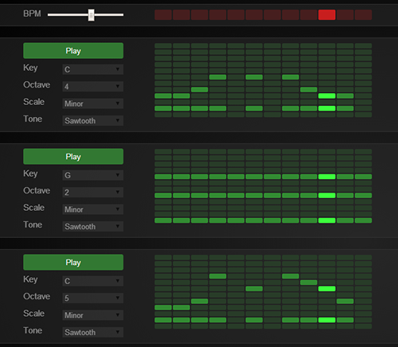

Multi-track Synthesizer
Prototype
http://people.rit.edu/bcw7044/p1/synth/ Abstract
The experience is a multi-track synthesizer. The user would be able to create and run multiple audio tracks, each with its own melody. This site was used for a basic idea of how the sequencer matrix would work. Each matrix is a separate track which can be individually modified. The user will be able to add or delete tracks, as well as turn playback of a track on or off. The user will also be able to adjust the tempo and the number of beats per track. The tempo and number of beats is shared among all of the tracks. To turn a note on or off, the user will simply need to click on the note on the matrix to toggle that note.
On each track there are additional options to modify properties of that specific track. The user will be able to change the musical key and octave that the notes in that track are played in. Also, the user can change the scale to be a major, minor, chromatic, or blues scale. Additionally, the matrix can shifted to the left or right using the arrows on the left and right of each matrix. Finally, the tone of the notes can also be changed to sine, sawtooth, triangle, or square.
Design
The design is fundamentally list-based, in order to clearly convey the track structure. With a bar for system-wide settings at the top of the page, individual tracks can be added and deleted below. With the sequencer matrix being the most important tool in each track, it was intentionally given vibrant green tones to make it stand out. Most of the other controls were given a dark color pallete to help quell the visual noise of extra sliders and dropdowns.
Technical
Under the hood, this site makes heavy use of the Web Audio API. A signal chain composed of oscillators, gain nodes, and waveshaper nodes is used to create the audio. A master timer in the Main.js file advances the current beat on each track, and each track enables and disables the oscillators corresponding to the notes on the sequencer. In order to be polyphonic, each row of the sequencer (each pitch) has its own dedicated oscillator. When the user changes the key or the scale, all of the oscillators are set to new frequencies according to the music theory functionality in Util.js.
Extras
- In-browser sound generation using the the Web Audio API.
- Custom signal chain for effects processing.
- Note frequencies are dynamically computed for the given key, octave, and scale.
- 2D array handling allows for resizing and shifting of the note matrix.